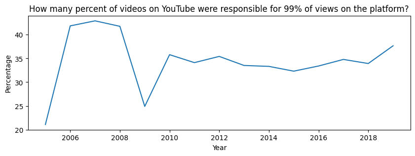
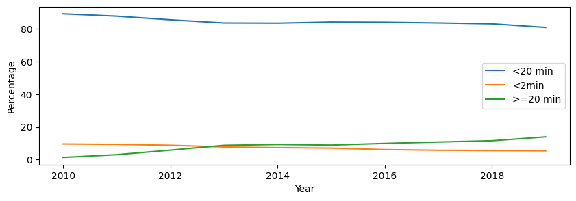

You sit comfortably on your couch and pick up your phone. You scroll through the latest TikTok trend, past that funny Reel about Gen-Z humor. You snug into a blanket, ready to dive into the new 20 min episode by 3Blue1Brown on 'Why PI Is Everywhere'. Once on YouTube, though, you get sidetracked by a Short of Elon taking a puff with Joe Rogan, and you end up irritated by a Vox documentary on the Rise to Power of Vladimir Putin. You stop and think: Where are the cute kittens? How long were they absent in my recommendations?
In its 18-year history, YouTube has become the undisputed king of online video. As of 2022, YouTube is the second biggest social media in the world, with over 2.5 billion active users, who watch hundreds of hundreds of millions of hours of content every single day. The company rose like a rocket ship after its founding in 2005 by Steve Chen, Chad Hurley, and Jawed Karim, who were all early employees of PayPal, and was bought by Google 18 months later. Under Google, YouTube went from being a repository of amateur video to a powerhouse of original content, not to mention a launching pad for its own new brand of superstars, like PewDiePie and the Smosh Brothers. The increase in users is directly proportional to the increasing number of video content uploaded on YouTube. This has become a place for everyone to compete in creating video content and earning income from uploaded videos. We would like to explore the path of Youtube to be the second most visited site in the world.
To explore YouTube's trends over the years, we will travel through time using the part of the YouNiverse Dataset that consists ofEnglish-content video metadata for over 72.9M videos, including descriptions, tags, numbers of likes, views, etc
We want to focus on the trends over the years of existing YouTube in a format of evolution. To understand where we were and are now . From the nostalgic cute kittens short videos to professional content creators with a global audience and incredible production quality making a real impact on topics like political rivalries, product reviews and scientific education. What content became a part of our school of life, and how do people operate the platform in recent years?
In April 2011, James Zern, a YouTube software engineer, revealed that 30 percent of videos accounted for 99 percent of views on the site. This fact corresponds to the notion of trends on YouTube. So, let's derive this point and look at the timeline of how many percent of videos on YouTube were responsible for 99% of views on the platform for other years.
As we can see even in the first years of existing the platform the whole content wasn't covered by the viewers and with time this percentage was fixed at over 28-32% of videos that were responsible for 99% of views. Indeed, recommendations play a pivotal role across our entire community, introducing viewers to content they love and helping creators connect with new audiences. The main issue of advantage is that you will never be faced with a minority of content on your recommendation page. And will never see extreme content because YouTube more generally reflects personal preferences that can be seen across their online habits. We digress …
The additional question arises: What is the behavior of the duration of videos over the years, so that it changes the number of views? Wow! Everything tends to be longer! The simplest explanation for these swelling run times is a straightforward business. As a study -add link here- from the Pew Research Center demonstrates, YouTube has been quietly shifting its recommendation system to reward lengthy videos.
Wow! Everything tends to be longer! The simplest explanation for these swelling run times is a straightforward business. As a study from the Pew Research Center demonstrates, YouTube has been quietly shifting its recommendation system to reward lengthy videos.
Let's now categorize videos based on the duration: less than 2 minutes, between 2 and 20 minutes, and more than 20 minutes (corresponding to the actual filters in YouTube). The following plot shows the contribution of videos with different duration to the total amount of views on YouTube.
The videos that have a duration of less than 20 min prevail over the other videos, but there is a tendency for the longer videos to dominate the really small ones starting from 2013. We assume that this increasing gap between short and long videos after 2013 might be the reason why TikTok became so successful nowadays.
The classification of positive and negative content becomes very important for the YouTube user to assess how meaningful the content that has been published is based on user opinion. A large following to a YouTube channel gives enough power to the content creator to manipulate the video and reach a thousand users. As anyone can upload a video on YouTube, it can become a means to spread false information and rage. Viewers themselves may not distinguish the negative context in the video. Most of them are immune from hiding the extreme sentiment. We got the following results over years looking at the title of the video: The large number of neutral titles is due to two main reasons:
THIS NEEDS TO CHANGE-We at this point are not sure if the hate is paid. For that we need to do the exact matching for each year with the equal author setting like duration and category. The are some
YouTube has always fascinated us with its incredibly vast library of content that rapidly changes over years. Trying to zoom out and visualize the content ecosystem as a whole may help us to derive the proper conclusion out of the platform and creators there. Seeing the broad scope of communities and connections at scale may also be a powerful tool for understanding online behavior. We are aware that the category attribute is too broad and consists of various topics. However, choosing the right category will help in promotion of your video to the target audience. Nevertheless, we use YouTube tags that are words and phrases used to give YouTube context about a video. Moreover, tags are considered an important ranking factor in YouTube's search algorithm. So, we decided to dive into the tags to be able to explore the topic space of Youtube more precisely.
Let's look at the most popular tags for some years.

We are taking into account the most viewed videos that show us the main topics for each year. WordCloud shows us pretty interesting results. The hottest topics over the years seem to be Funny, Music, News, Comedy.
We want to compare our results to the search in YouTube with GoogleTrends. And see the supply and demand.
For the "Funny" tag we can see that it was a big part of Youtube since 2006 and remained extremely popular for all time periods. But looking at the search tendency, it becomes obvious that people's interest in it is constantly decreasing. Regarding "Music", we can observe that roughly speaking, the search and posting videos tendencies overlap, and the peak in 2011 is common for searching and posting. For "News", the tendency is that content (increased in 2017) is trying to follow the demand (started in 2016) we can see in searches. The first demand, then supply. Looking at the "Comedy" tag, a lot of content was produced far earlier (since 2006), then people started to search for it (2017).
Replicating the process for YouTube, a much larger platform, was no easy task. Since we are discovering trends, we would like to consider only 1% of YouTube videos per year ranked by view count, which is reasonable due to the extremely high amount of videos uploaded each year and variety of categories among this 1%. We found our answer by looking at the graph that consists of nodes as videos and edges as common tags. By collecting these tags and comparing them across all videos, we could build a graph of video relationships.
How to read this graph:
The atlas shows the top 1% YouTube videos per year ranked by view count. What insights would this type of visualization hold?
Exploring the centrality of the 3 largest graph components we might find the most viewed videos of the specific year. Here we have the most important node in each community:
Year 2009 (2/3 Indian movies)We wonder if the videos are described in both tags and categories but the most explicit is the information of the tag: how the categories are connected among each other in terms of tags?
Using the previous graph with the strongly connected videos, we displayed the following plots of interaction between the categories. Where the node is the category, and the size of the node is proportional to the number of videos in this category. The circle graph is weighted and depends on the number of connections.
The results tell us much about the content of the platform.
Add text explaining the question

Add text here comparing this word cloud with the previous word cloud of tags, and how it actually descibes trending social media platforms. We also should mention that we're cutting off anything that gets too popular to try and spot the new trends and actual topics of each year